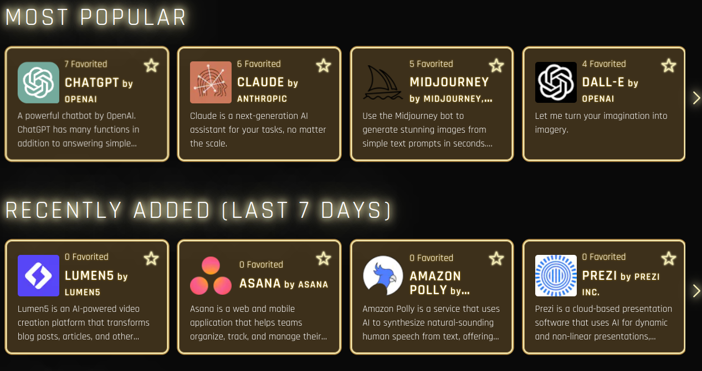
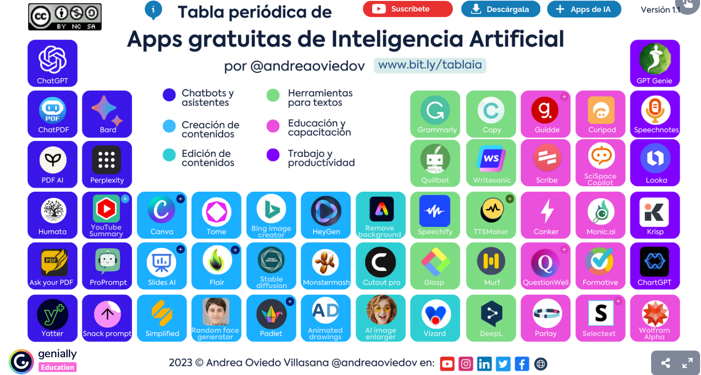

Recopilacions
Recopilacions de recursos que podem trobar a diferents llocs d'internet.
Recopilació feta pel MIT

No es necessita un compte per a explorar la vasta biblioteca d'eines, la qual cosa democratitza l'accés a la informació sobre IA. No obstant això, per a aquells que desitgin aprofundir, l'opció de crear un compte mitjançant invitació obre la porta a funcions addicionals, com la personalització i la creació de llistes d'eines favorites, la qual cosa considero un recurs valuós per al seguiment i la revisió de tecnologies emergents.
Taula amb recursos de la IA.

Web a INTEF sobre recursos IA
Inteligencia artificial en educación
https://descargas.intef.es/cedec/proyectoedia/guias/contenidos/inteligencia_artificial/index.html